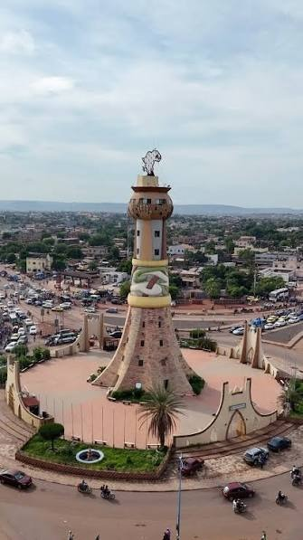

Glissez pour pivoter 360°• Zoom molette / pincement• Cliquez sur les orbes dorées

Monument Emblématique du Mali
La Tour de l'Afrique
Rond-point de Faladié, Bamako, Mali
46 Mètres
Hauteur totale
Soudano-Sahélien
Style architectural
2001
Inauguration
Érigée au cœur de Bamako à l'entrée sud de la capitale malienne, La Tour de l'Afrique est un hommage architectural grandiose aux pères fondateurs de l'unité africaine.
Sa silhouette s'inspire du banco et des minarets sahéliens ancestraux de Djenné et de Tombouctou. Elle culmine avec la carte stylisée du continent africain illuminée, symbolisant la fierté, la renaissance et l'ouverture de la jeunesse africaine sur l'innovation mondiale.